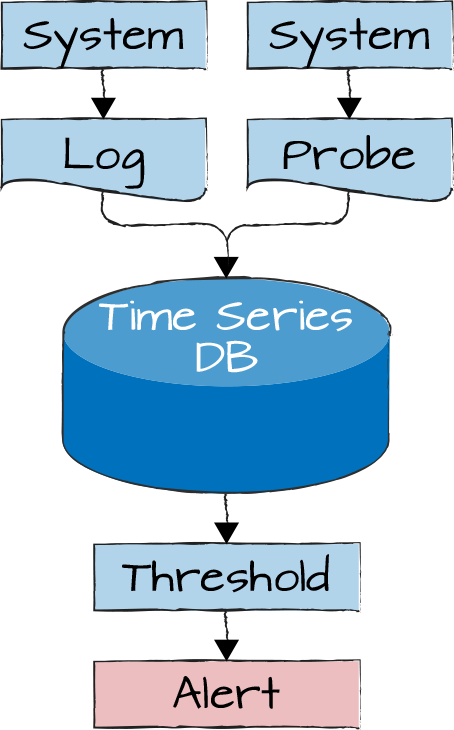
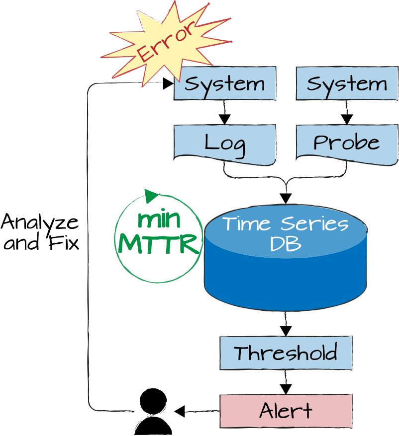
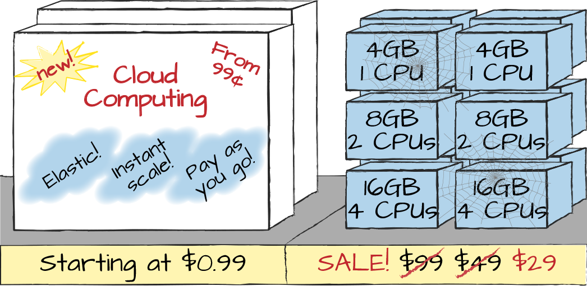
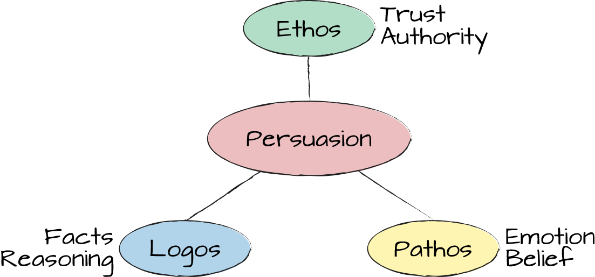

Why the Whole Is Much More Than the Parts
When you look at the cover of a box of LEGOs you don’t see a picture of each individual brick that’s inside. Instead, you see the picture of an exciting, fully assembled model, such as a pirate ship. To make it even more exciting, the model isn’t sitting on a living room table but is positioned in a life-like pirate’s bay with cliffs and sharks—Captain Jack Sparrow would be jealous.
What does this have to do with communicating system architecture and design? Sadly, not much, but it should! Technical communication too frequently does the opposite: it lists all the individual elements in painstaking detail but forgets to show the pirate ship. The results are tons of boxes (and hopefully some lines; see Chapter 23), without a clear gestalt or overall value proposition.
Is this a fair comparison, though? LEGO is selling toys to kids, whereas architects need to explain the complex interplay between components to management and other professionals. Furthermore, IT professionals have to explain issues like network outages due to flooded network segments, something much less fun than playing pirates. I’d posit that the analogy holds and we can learn quite a few things from the pirate ship for the presentation of IT architecture.
The initial purpose of the pirate ship is to draw attention among all the other competing toy boxes. While kids come to the toy store to hunt for new and shiny toys, many corporate meeting attendees are there because they were delegated by their boss, not because they want to hear your content. Grabbing their attention and getting them to put down their smartphones requires you to show something exciting.
Sadly, many presentations start with a table of contents, which I consider rather silly. First, it isn’t exciting: it’s like a list of assembly instructions instead of the ship. Second, the purpose of a table of contents is to allow a reader to navigate a book or a magazine. If the audience must sit through the entire presentation anyhow, there is no point in giving them a table of contents at the beginning.
Starting a presentation with a table of contents isn’t useful, because the audience doesn’t get to jump to Chapter 3. It also makes for a boring start: have you ever seen a movie that begins with the outline of its storyline?
The old adage of “tell them what you are going to tell them,” which is vaguely attributed to Aristotle, certainly doesn’t translate into a slide showing a table of contents. You are going to tell them how to build a pirate ship!
The moment children and your audience look at the pirate ship, they should feel excitement. How cool is this? There are sharks and pirates, daggers and cannons, chests of gold, and the parrot. You can feel the story unravel in your head just as you are reading the list of play pieces. Why should PaaS, API gateways, web application firewalls, and build pipelines tell a less exciting story? It’s a story of gaining speed in the treacherous waters of the digital world where automated tests and build pipelines keep you safe despite the fast pace. Automated deployments industrialize your delivery, and PaaS allows your fleet to grow and shrink as needed while you’re trying to avoid running ashore in the vicious land of vendor lock-in. That’s at least as exciting as a pirate story!
I am convinced that IT architecture can be much more exciting and interesting than people commonly believe. In an interview with my friend Yuji back in 2004, I explained that software development is quite a bit more exciting than it appears on the outside—it is as exciting as you make it. If you regard software development as a pile of LEGOs, you haven’t seen the pirate ship! People who find software and architecture boring or just a necessary tedium haven’t scratched the surface of software design and architecture thinking. They also haven’t understood that IT isn’t any longer a means to an end but an innovation driver for the business. They consider IT as randomly stacking LEGO bricks, when in reality we are building exciting pirate ships!
Coming back to the pirate ship, the box also clearly shows the purpose of the pieces inside. The purpose isn’t for the bricks to be randomly stacked together but to build a cohesive, balanced solution. The whole really is much more than the sum of the parts in this case. It’s the same with system design: a database and a few servers are nothing special, but a scale-out, masterless NoSQL database is quite exciting.
Alas, the technical staff who had to put all the pieces together is prone to dwell on said pieces instead of drawing attention to the purpose of the solution they built. They feel that the audience should appreciate all the hard work that went into assembling the pieces as opposed to the usefulness of the complete solution. Here’s the bad news: no one is interested in how much work it took you; people want to see the results you achieved.
A pirate ship can do more than build excitement. It can also be a tool to make better decisions. My Architect Elevator workshops include an exercise to draw a system architecture. To see different ways of illustrating a common architecture, I picked a system that’s quite well understood to most attendees, an application monitoring system. I hand each group of attendees about a dozen cards, each of which contains common monitoring components like log aggregator, time series database, thresholds, alerting, and ask them to draw an architecture containing these pieces.
Attendees will typically draw diagrams that put the components into a logical sequence; for example, by data flow, as demonstrated in Figure 19-1. Sometimes components are further grouped into major functions, such as data collection, data processing, and user interface. That’s what architecture diagrams normally look like.

After looking at such diagrams, I ask an innocent-sounding question: “What’s this system’s purpose?” Initially, attendees mention detecting anomalies and alerting someone. After some contemplation and prodding, the architects start to see the bigger picture. They correctly identify the real purpose of a monitoring system as maximizing system availability by minimizing system downtime. This is easily validated by assuming the opposite: the only time you don’t need any monitoring is if you don’t care about system availability.
Soon after, participants realize that the original picture shows only half the equation: a monitoring system is useful only if a detected problem can be analyzed and corrected. Based on this insight, they start to augment or redo the diagrams to show the pirate ship; that is, the main purpose, as depicted in Figure 19-2.

They can now add the equivalent of the shark and the parrot by illustrating the purpose in the center of the diagram: minimize MTTR, the time from the error to recovery. As the MTTR spans the whole circle, we can think about both sides: how long does it take to detect an outage, and how long does it take to resolve it?
Thanks to the completed model, this aspect is apparent, and we can better reason about whether the company should invest in an upgraded monitoring system. Investing in a monitoring system that reduces the time to detect outages from half an hour to a few minutes thanks to better sensors and smarter analytics may seem like a good idea. If resolving an outage takes several hours, though, the picture changes: spending, for instance, half a million dollars to reduce the MTTR from 4.5 hours to 4.1 hours doesn’t look that great anymore. Instead, you’d be looking to reduce the time spent resolving outages. This can be achieved, for example, by better transparency across systems or higher levels of automation (Chapter 13) that can quickly roll back the deployed software to an earlier, stable version. Drawing a better picture has helped us make better decisions (Chapter 22).
A successful concept similar to the pirate ship is the product box, one of Luke Hohmann’s “innovation games,” from his book of the same title.1 This game asks participants to design a physical retail box for their product. To be appealing to potential buyers, such a box would want to show common usages and highlight benefits instead of just features.
Thinking of your product like a retail item can help focus on tangible benefits instead of technical features.
If teams do well, they’ll put an exciting pirate ship on the cover, as shown in Figure 19-3.

Drawing a pirate ship is generally a new, and occasionally uncomfortable, exercise for product and engineering teams. A few techniques can overcome initial hurdles.
The LEGO box cover image shows the pirate ship within a useful context, such as a (fake) pirate’s bay. Likewise, the context in which an IT system is embedded is at least as relevant as the intricacies of the internal design. Hardly any system lives in isolation, and the interplay between systems is often more difficult to engineer than the innards of a single system. So you should show a system in its natural habitat.
Many architecture methods begin with a system context diagram. While well intentioned, too many times it fails to be useful because it aims for a complete system specification without placing an emphasis (Chapter 21). Such diagrams show an endless ocean, but not the pirate ship.
LEGO toys also show the exact part count and their assembly, but they do so on a leaflet inside the box, not on the cover. Correspondingly, technical communication should display the pirate ship on the first page or slide and keep the description of the bricks and how to stack them together for the subsequent pages. Get your audience’s attention, then take them through the details. If you do it the other way around, they might all be asleep by the time the exciting part finally comes.
Just like LEGO has different product ranges for different age groups, not every IT audience is suitable for the pirate ship. To some levels of management that are far removed from technology, you may need to show the little duckie made from a handful of LEGO DUPLO bricks.
Some might feel that excitement is a bit too frivolous for a serious workplace discussion. That’s where you should look back at Aristotle, who gave us great advice on communicating, some 2,300 years ago (Figure 19-4). He concluded that a good argument is based on logos, facts and reasoning; ethos, trust and authority; and pathos, emotion! Most technical presentations deliver 90% logos, 9% ethos, and maybe 1% pathos. From that starting point, a small extra dose of pathos can go a long way. You just have to make sure that your content can match the picture presented on the cover: pitching a pirate ship and not having the cannons inside the box is bound to lead to disappointment.

While on the topic of toys: building pirate ships would be classified by most people as playing—something that is commonly seen as the opposite of work. Pulling another reference from the ’80s movie archives reminds us that “all work and no play makes Jack a dull boy.” Let’s hope that lack of play doesn’t have the same effect on IT architects as it had on the author Jack in the movie The Shining—he went insane and attempted to kill his family. But it certainly stifles learning and innovation.
Most of what we know we didn’t learn from our school teachers, but from playing and experimenting. Sadly, most people seem to have forgotten how to play, or were told not to, when they entered their professional life. This happens due to social norms, pressure to always be (or appear) productive, and fear. Playing knows no fear and no judgment; that’s why it gives you an open mind for new things.
Playing is learning, so in times of rapid change architects need to play more.
If playing is learning, times of rapid change that require us to learn new technologies and adapt to new ways of working should re-emphasize the importance of playing. I actively encourage engineers and architects in my team to play. Interestingly, LEGO offers a successful method called Serious Play for executives to improve group problem solving. They might be building pirate ships.
1 Luke Hohmann, Innovation Games: Creating Breakthrough Products Through Collaborative Play (Boston: Addison-Wesley), 2007.